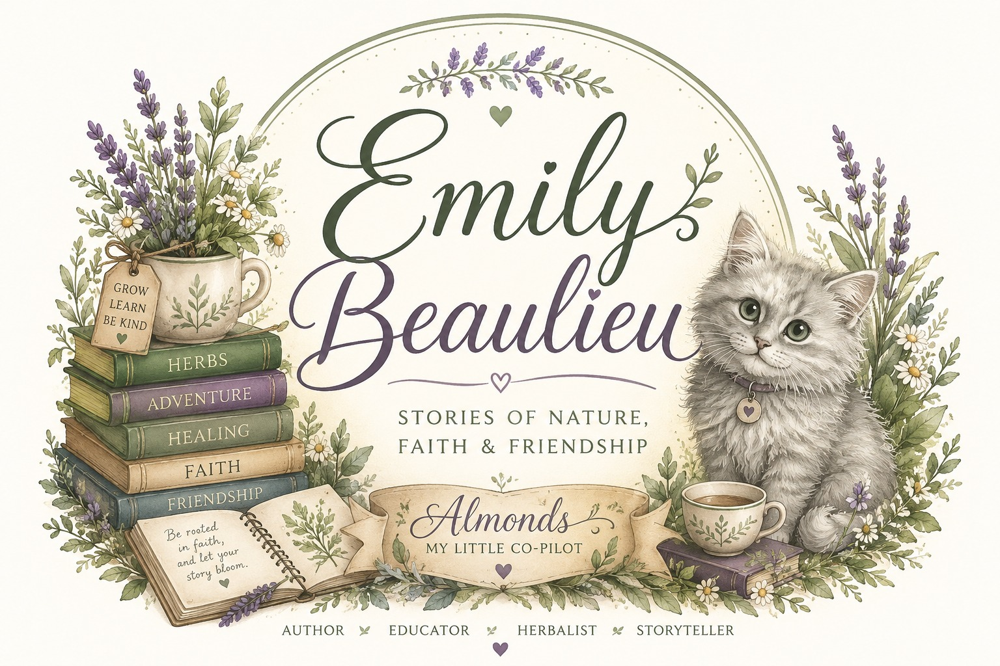

Emily Narelle Beaulieu writes from a small homestead in New Hampshire, where the line between classroom lesson and garden adventure has always been pleasantly blurry.

Emily Beaulieu is a New Hampshire author, early childhood educator, herbal enthusiast, and homesteader whose stories are inspired by faith, nature, resilience, and a love of learning. As a full-time educator, Emily has spent years helping young children discover the world around them — and that classroom curiosity is exactly what sparked her first book.
Her passion for herbs, gardening, and outdoor education grew through homesteading with her mother. Together, they care for animals, grow plants, and study the traditional uses of herbs — interests that became the soil for The Herbalist Club series, a middle-grade adventure combining friendship, nature, and hands-on learning.
Faith plays an important role in Emily's life and writing. As a Christian, she strives to create stories that reflect hope, compassion, and perseverance — themes at the heart of her historical romance, The Healer at War.

At age 14, Emily was diagnosed with scoliosis and underwent spinal fusion surgery on July 26, 2016, at Boston Children's Hospital. The journey brought physical and emotional challenges — but also taught her resilience, courage, and the importance of self-acceptance.
Nearly ten years later, she wrote Different But Me! to help children facing scoliosis and other medical challenges feel seen, understood, and supported. Through her story, she hopes readers remember that their differences do not define them, and that they are never alone in their struggles.
Read About the Book"As an educator, I have learned that every child learns differently, and not every lesson can be taught the same way. I truly believe that if children cannot learn the way we teach, then we should teach the way they learn. Writing allows me to reach children beyond the classroom and introduce subjects through stories, adventures, and relatable characters."
— Emily Beaulieu
No homestead is complete without a resident troublemaker. Almonds — the fluffy gray inspiration behind the kitten in The Herbalist Club — supervises every writing session, garden walk, and (apparently) this website too.
If you scroll long enough, you might just catch her wandering across the page.
Emily writes children's and middle-grade adventures, faith-filled historical romance, and homesteading-inspired stories under her own name — and explores tween and YA fiction, like Different But Me!, as Autumn Wilde.
Whether it's about a classroom visit, a book club, or just to say hello — Emily would love to hear from you.
Get in Touch